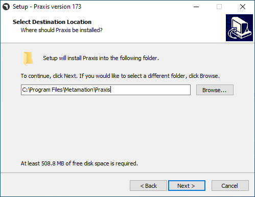

サーバーインストール
SQLとともにTruSmartCAMサーバーインストールを行うには、以下の手順に従ってください。
|
管理者権限
このインストールを実行するには、ユーザーは管理者権限を持っている必要があります。 |
-
*Setup.TruSmartCAM.<version>.exe*を実行してインストールを開始します。
| Versionは数字です。 |
-
ライセンス契約を読み、*I accept the agreement*を選択してから、次へをクリックします。

ステップ1：インストール場所
-
インストールディレクトリを指定するか、デフォルトの`C:\Program Files\Metamation\Praxis`を受け入れて、次へをクリックします。
-
C:\Program Files\Metamation\Praxis- インストールフォルダーには、Bin、MetaCAM、Samples、Trackerのフォルダーが含まれます。 -
C:\Program Data\Metamation- データフォルダーには、TruSmartCAM、TecZone、MetaCAMのフォルダーが含まれます。
-

ステップ2：コンポーネントの選択
| インストールタイプ | コンポーネント |
|---|---|
Full |
Server + Desktop client + Engine |
Client |
Desktop Client |
Server |
Server + Desktop client |
Station |
TecZone、MetaCAM、RightAngle（曲げコントローラー）、Vulcan（レーザー機械コントローラー）などのすべてのステーション端末を選択 |
Custom |
ユーザーの選択により選択 |
-
Fullインストールを選択します。TruSmartCAMツールから*Code Senders*と*Bend Code Senders*を選択します。これで、インストールタイプが*カスタム*に変わります。次へをクリックします。

ステップ3：SQL Serverのインストールを選択
|
SQL Express 2022のインストールは、TruSmartCAMサーバーにのみ必要です。このオプションは、ClientおよびSyncインストールでは使用できません。また、これは初回時にチェックONでインストールされ、それ以降は無視できます。TruSmartCAMサーバーにすでにSQLがインストールされている場合、ユーザーはステップ3を無視できます。 |
-
Select Additional Tasksで：*Install SQL Express*をクリックし、次へをクリックします。
-
Ready to Installで：すべてのインストール機能の概要を確認し、Installをクリックします。

ステップ4：SQL Serverのインストール
TruSmartCAMコンポーネントがインストールされると、インストーラーはSQLサーバーのインストールに進みます。ライセンス契約を受け入れて続行し、デフォルトのオプションでSQL expressをインストールします。

インストールが完了したら、Closeをクリックしてインストールを完了します。

| Windowsのバージョンによっては、SQLインストールを閉じると再起動を促す場合があります。 |
ステップ5：Windowsデスクトップショートカット
-
SQLインストール後、システムが再起動しない場合は、*Launch TruSmartCAM*チェックボックスを選択し、*Finish*をクリックします。
-
システムが再起動した場合は、デスクトップのTruSmartCAMショートカットアイコンを起動するか、WindowsスタートプログラムでPraxisと入力し、*管理者として実行*します。
| サーバーインストール：TruSmartCAMとTruSmartCAM Licenseのショートカットアイコンがデスクトップに表示されます。+ Client/SYNCインストール：TruSmartCAMショートカットアイコンのみがデスクトップに表示されます。 |

ステップ6：ライセンス登録
-
Serial Number_フィールドに、Trumpf Metamation Serviceチームから提供されたTruSmartCAM Serial key_を入力します。"Registered to"フィールドに*<Company Name>*とE-Mailを入力します。*OK*をクリックします。

|
ネットワークファイアウォールがライセンス登録をブロックする場合、またはTruSmartCAMサーバーPCにインターネットがない場合、TruSmartCAMライセンスはオフラインアクティベーションで行われます。C:\ProgramData\Metamation\Praxis_フォルダーから*_Prax.request*をTrumpf Metamation Serviceチームにメールで送信します。Trumpf Metamationチームが*Prax.lock*を提供しますので、このフォルダーにドロップする必要があります。 |
ステップ7：初回の1回限りの構成
-
データベース名を入力し、データストレージの場所を設定します。SQL Serverを使用するチェックボックスを選択し、データベースに接続するSQLサーバー名を選択します。*OK*をクリックします。

-
TruSmartCAMデスクトップクライアントが開き、下部に*Database Connection Succeeded*が表示されます。
-
TruSmartCAM、TecZone、MetaCAMの構成ファイルが、デフォルトの構成マシンまたはTruSmartCAMライセンスマシンに対して作成されました。同じ構成がすべてのTruSmartCAMクライアント間で共有されます。

Windowsユーザーログイン名がTruSmartCAMログインおよび名前として表示されるウェルカム画面が表示されます。最初のTruSmartCAMユーザーは*サイト管理者*と見なされます。メールとパスワードを入力します。*OK*をクリックします。
*記憶する*チェックボックスを選択して、次回のためにログイン資格情報を保存します。 *記憶する*チェックボックスをクリアすると、TruSmartCAMアプリケーションが起動されるたびにログインとパスワードのダイアログが表示されます。

ステップ8：TruSmartCAMサインイン
-
TruSmartCAMを閉じて再度開きます。システムはTruSmartCAMログイン資格情報の入力を求めるプロンプトを表示します。

-
ログインしたユーザー名は、TruSmartCAMアプリケーションヘッダーのユーザーアイコンの横に表示されます。

-
ユーザーアイコンにマウスを合わせると、システムは以下を表示します。

-
ユーザーロール（例：Programmer、Admin）。
-
ログアウトのショートカット：Ctrl+L。
-
-
ユーザーアイコンをクリックすると、以下を実行できるメニューが開きます。

-
情報の編集… - プロフィールの詳細を更新します。
-
パスワードの変更… - アカウントのパスワードを変更します。
-
サインアウト - アプリケーションからサインアウトします。
-
キャンセル - 変更を加えずにメニューを閉じます。
-
ステップ9：ファクトリーマシン構成
-
TruSmartCAMライセンス[すべてのマシンでライセンスビットが有効]：デフォルトのTruSmartCAMマシンとマテリアルがファクトリー構成と見なされます。
-
TruSmartCAMライセンス[デモなしで、いくつかのマシンビットが有効]：それらのいくつかのマシンとデフォルトのマテリアルがファクトリー構成と見なされます。
-
`C:\Program Files\Metamation\Praxis\Samples\Parts`から新しいパーツを（開く → インポート）し、パーツが正常にインポートされたことを確認します。

注1：TruSmartCAM Monitor
-
エンジンインストール付きTruSmartCAM Monitor（サイト管理者権限）：
-
サイト管理者TruSmartCAM権限を持つエンジン付きTruSmartCAM Monitorには、以下のオプションがあります。
-
すべてのTruSmartCAMクライアントにTruSmartCAM構成、TecZone、MetaCAM構成をプッシュします。また、新しいTruSmartCAMユーザーログインを作成する権限があります。
-
Show Agentsは、TruSmartCAMライセンスに対して自動化タスクを実行するために利用可能な合計エンジンを表示します。
-
-

-
エンジンインストールなしTruSmartCAM Monitor（サイト管理者権限）：

-
エンジンインストールなしTruSmartCAM Monitor（非サイト管理者権限）：

|
TruSmartCAMアプリケーションを実行するPCには、エンジンTruSmartCAMコンポーネントがインストールされている必要があります[サーバーPCまたは任意のクライアントインストール]。エンジンTruSmartCAMコンポーネントがインストールされているPCは、すべての自動化タスクを実行するために24時間365日稼働している必要があります。 |
注2：Lock Tracker
-
TruSmartCAMサーバーデスクトップで利用可能な*TruSmartCAM License*ショートカットをクリックします。または、任意のWebブラウザーでhttp://localhost:7171/metamation/locktrack URLを開きます。
これにより、ライセンス情報、TruSmartCAM現在のセッション情報、およびログを持つLock Trackerモジュールが開きます。
LockTracker HOMEページ：TruSmartCAMシリアル番号、シリアル有効期限情報、およびシリアルビット利用可能情報が表示されます。

LockTracker SESSIONSページ：TruSmartCAMデスクトップクライアントPC、PMonitor、PEngineステータスなどの現在のTruSmartCAMサーバー接続情報。

LockTracker LOGsページ：TruSmartCAMクライアントの開始とログオフ | Pmonitorの開始およびPEngineの接続/切断ステータスなどは、このLogsページで確認できます。

注3：OpenGL
-
TruSmartCAMアプリケーションを開くとすぐに閉じられ、タスクバーにpmonitorも表示されません。
-
これはOpenGLの問題を表しています。
-
これを確認する別の方法：C:\Program Files\Metamation\Praxis\Bin\Flux.exeを開くと、OpenGLの問題に関するエラーダイアログが表示されます。

-
_C:\ProgramData\Metamation\Praxis\Prax.ini_のoptionsセクションを*GLVersion=1*で更新すると、TruSmartCAMアプリケーションが正常に開きます。
[Options]
GLVersion=1.0